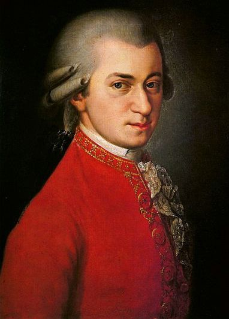
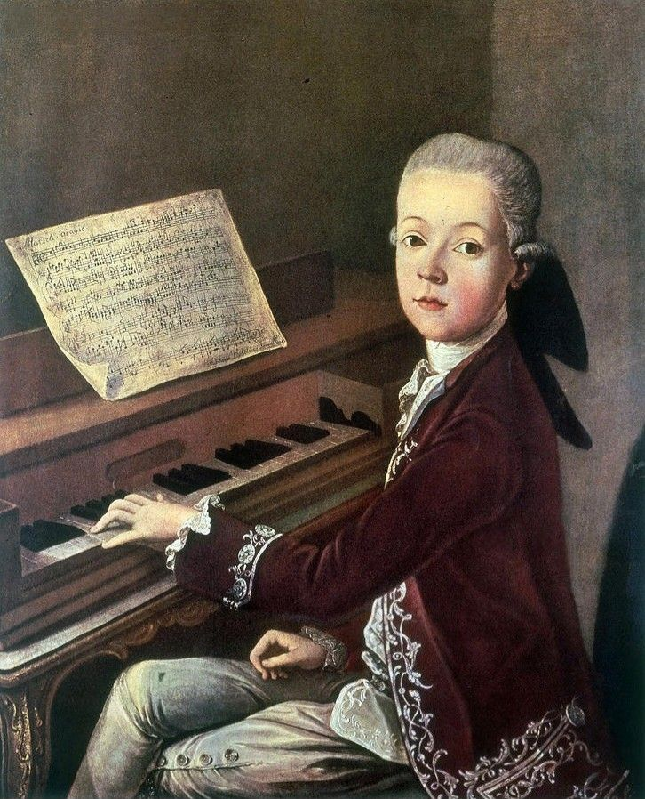
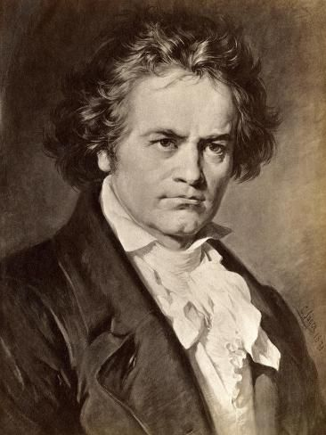
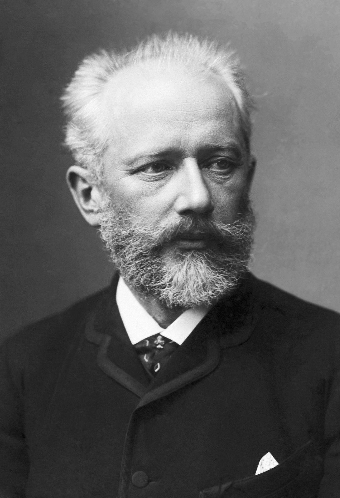
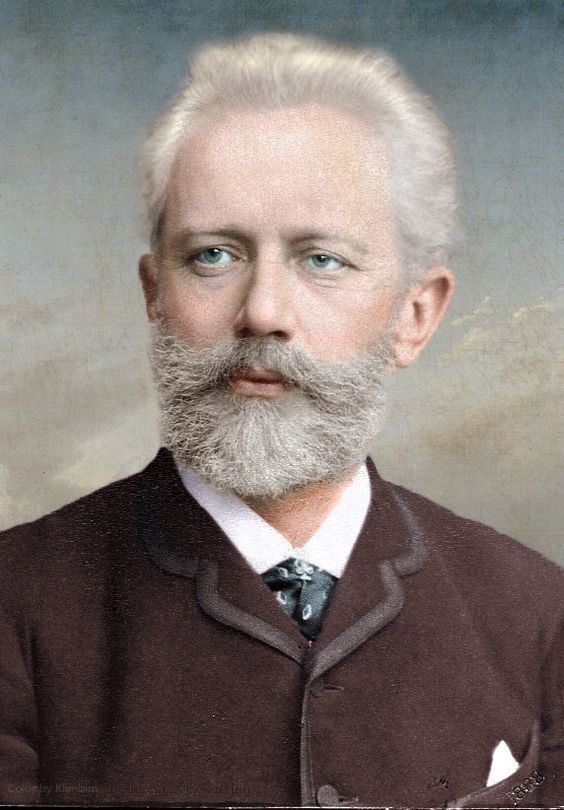

Classical Music
Classical music represents the Western art music tradition with roots extending back to medieval times, reaching its most recognizable form during the 18th and 19th centuries. Unlike popular music genres, classical music is characterized by its complexity, formal structures, and emphasis on compositional craft over commercial appeal. Classical compositions are typically written in detailed notation that specifies not only the notes to be played but also dynamics, articulation, and expression markings. The structural sophistication of classical music is evident in its large-scale forms such as symphonies, concertos, sonatas, and operas. These forms represent centuries of musical development, with composers building upon and refining the work of their predecessors. A symphony, for example, typically consists of multiple movements, each with its own character and function within the overall work. This architectural approach to music creates listening experiences that unfold over extended periods, taking listeners on emotional and intellectual journeys.
Most famous Classical Music writers
Wolfgang Amadeus Mozart
Wolfgang Amadeus Mozart (1756-1791) An Austrian composer of the Classical period, Mozart was a child prodigy who became one of the most influential composers in Western music history. He composed over 600 works including symphonies, concertos, chamber music, and operas like "The Magic Flute" and "Don Giovanni." His music is celebrated for its technical perfection and emotional depth.


Ludwig van Beethoven
Ludwig van Beethoven (1770-1827) This German composer bridged the Classical and Romantic periods of Western music. Despite progressive hearing loss, he composed some of the most beloved works in classical music, including nine symphonies (notably the "Ninth Symphony" with "Ode to Joy"), five piano concertos, and numerous chamber works. His music is known for its emotional intensity and structural innovation.

Pyotr Ilyich Tchaikovsky
Pyotr Ilyich Tchaikovsky (1840-1893) This Russian composer of the Romantic period created some of the most popular works in classical music, including the ballets "Swan Lake," "The Nutcracker," and "Sleeping Beauty." His symphonies, concertos, and orchestral works are known for their emotional expressiveness and memorable melodies. He was the first Russian composer to gain international recognition.

